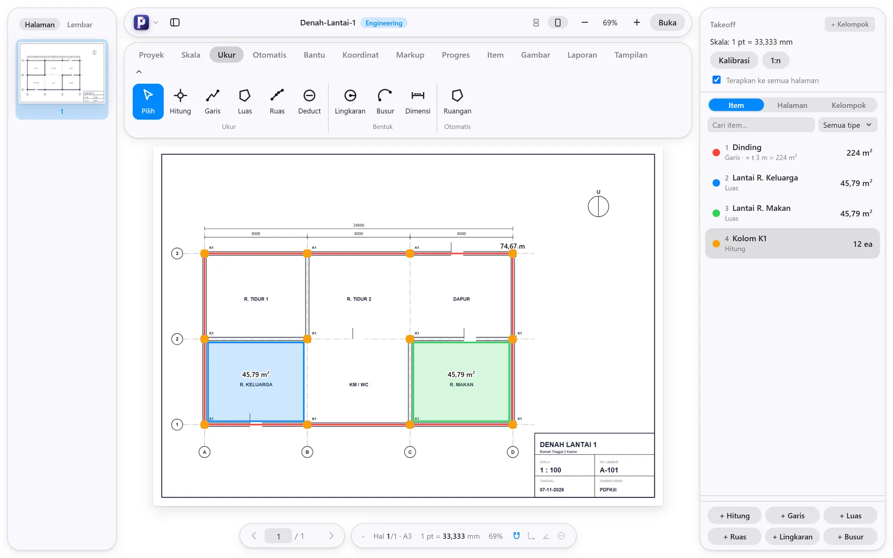
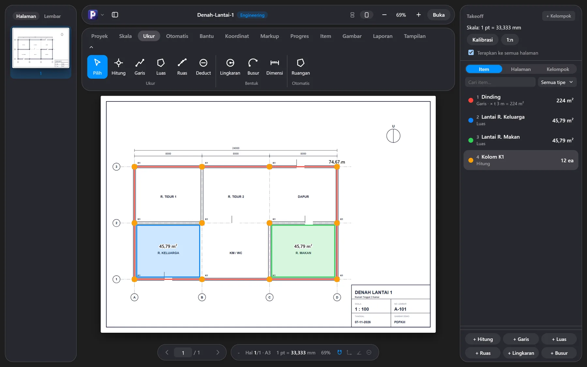
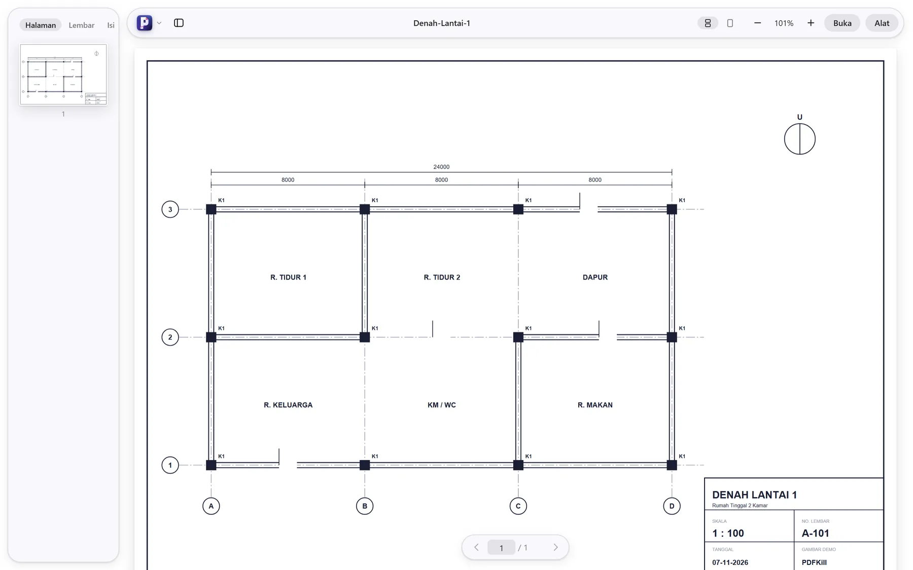
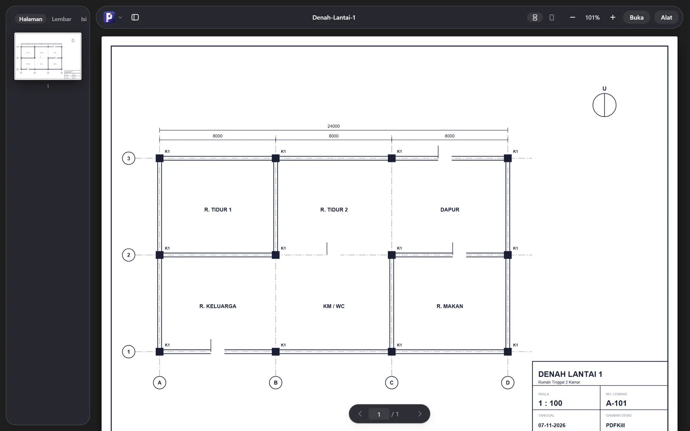
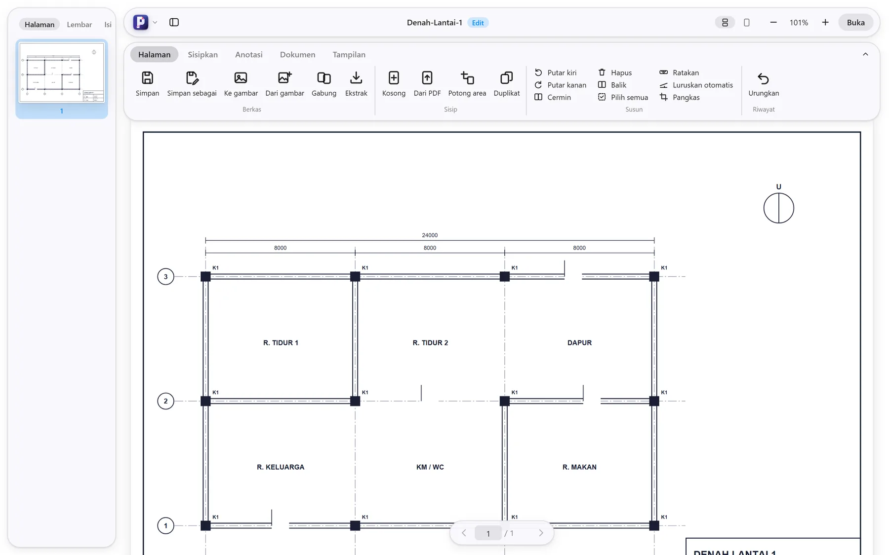
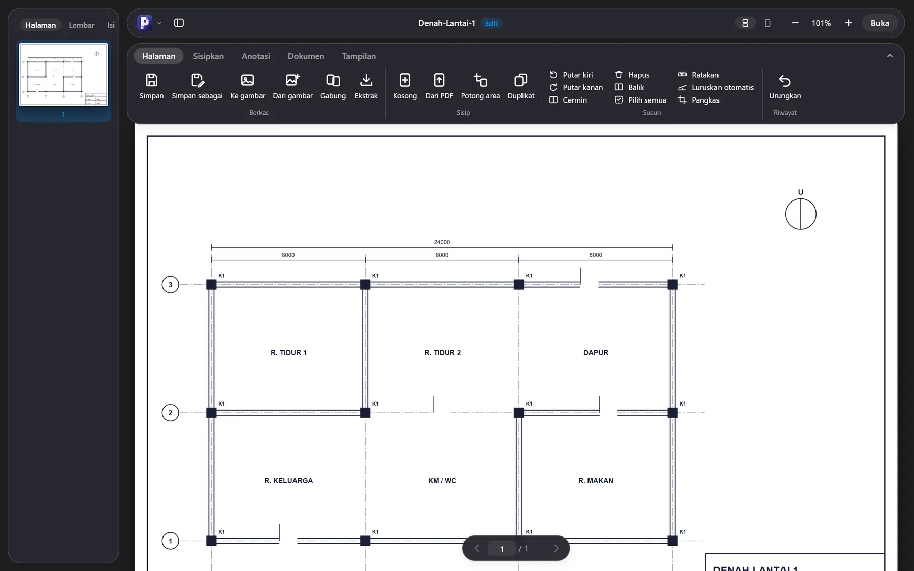

Skala dan ukur
Kalibrasi skala, ukur panjang, luas, dan hitung. Snap ke garis gambar, Ortho dan Polar untuk sudut tepat.
PDFKill adalah aplikasi PDF yang ringan dengan mode Engineering: atur skala, ukur panjang dan luas, hitung elemen, lalu keluarkan rekap ke Excel. Semua berjalan di komputer Anda.


Pindah mode dari tombol logo di kiri atas atau dengan pintasan. Setiap dokumen mengingat modenya sendiri.
Gulir mulus atau per halaman, zoom, thumbnail, tab dokumen, pencarian teks, bandingkan dua PDF, dan baca nyaring.
Ctrl + 1
Gabung, ekstrak, putar, hapus, dan susun ulang halaman. Anotasi, formulir, tanda tangan, redaksi, kata sandi, dan kompres.
Ctrl + 2
Takeoff gambar kerja: skala, ukur, hitung, rekap, RAB, dan ekspor. Cari simbol otomatis, deteksi grid, koordinat UTM, dan peta progres.
Ctrl + 3




Skala, ukur, hitung. Hasilnya langsung masuk ke tabel rekap yang bisa Anda periksa dan ekspor.
Bekerja dari PDF gambar kerja, termasuk hasil pindai yang miring.
Kalibrasi skala, ukur panjang, luas, dan hitung. Snap ke garis gambar, Ortho dan Polar untuk sudut tepat.
Beri contoh satu elemen. PDFKill mencari yang serupa, lalu Anda terima atau buang hasilnya.
Luruskan halaman miring, koreksi perspektif, dan kenali teks serta tag seperti K1 atau KT1-1 tanpa internet.
Deteksi as grid, koordinat lokal atau UTM, dan ekspor titik ke CSV.
Tandai elemen yang selesai dengan tanggal, lalu ekspor rekap dan PDF progres.
Harga satuan, rekap per item, ekspor CSV dan Excel, serta laporan siap cetak.
Proyek Engineering tersimpan sebagai berkas .pkp yang memuat PDF dan seluruh data takeoff: item, ukuran, skala, dan progres. Kirim satu berkas ke rekan, tanpa lampiran terpisah.
Ctrl+S menyimpan proyek dan tidak menimpa PDF asli.
Pembacaan, pengeditan, OCR, dan pencarian simbol berjalan lokal. Satu-satunya akses jaringan adalah pemeriksaan versi baru ke GitHub, dan aplikasi bertanya dulu sebelum memasang pembaruan.
Tidak ada akun, tidak ada server dokumen.
Hasil edit yang belum tersimpan bisa dipulihkan setelah aplikasi tertutup mendadak.
Gulir virtual dan riwayat urungkan dibatasi agar memori tetap aman.
Ya. PDFKill berlisensi Apache-2.0. Daftar lisensi pustaka pihak ketiga ada di dalam aplikasi: menu utama, lalu Tentang PDFKill.
Tidak. Di mode Engineering, Ctrl+S menyimpan proyek sebagai berkas .pkp yang memuat salinan PDF dan data pengukuran. PDF asli tidak ditimpa.
Bisa. PDFKill dapat meluruskan halaman miring, mengoreksi perspektif, mengenali teks dengan OCR offline, dan mengubah garis pindaian menjadi bentuk yang bisa di-snap. Hasil otomatis selalu ditampilkan untuk Anda periksa.
Saat dibuka, PDFKill memeriksa versi baru dan bertanya sebelum memasangnya. Bisa dimatikan di Pengaturan.
Saat ini baru Windows.
Repo ini hanya berisi berkas rilis. Kode sumber tidak dipublikasikan.